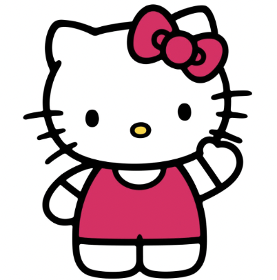

Hello Kitty
Cuteness Level: 10/10
Global icon of kindness and friendship, the bow changes color but the smile stays the same.
Cutest Sanrio Characters
Global icon of kindness and friendship, the bow changes color but the smile stays the same.
Loves baking and soft songs, proof that gentle energy can light up a room.
Punk on the outside, soft on the inside, loves pranks, journals, and dramatic flair.
A cinnamon-roll pup who practically floats, brings latte art energy to every scene.
Golden retriever spirit with dessert priorities, naps, and snacks.
Optimist of Donut Pond always ready for games, races, and a splash of adventure.